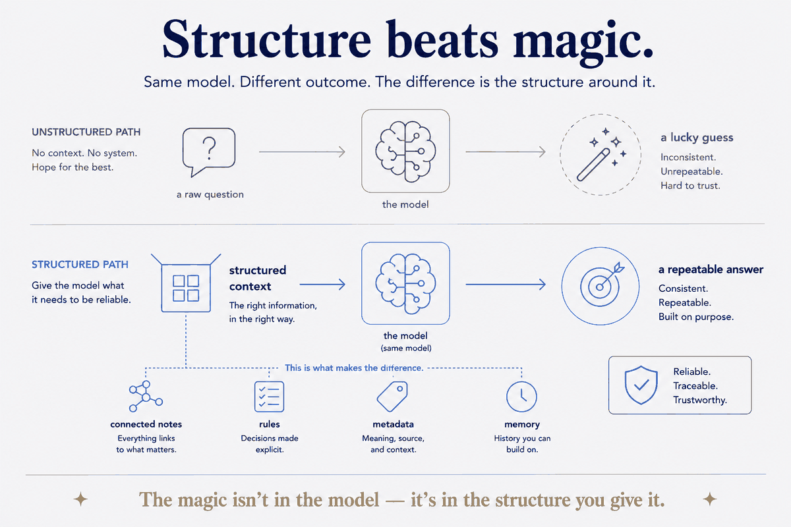

The magic isn't in the model; it's in the structure you give it.

The master brand: knowledge management re-architected for the AI era. Output quality comes from the structure around the tools — models, rules, metadata — not from the tools or hope.
The claim is deliberately falsifiable. Take one model and ask it a raw question: you get an answer whose quality you can't predict and can't reproduce — a lucky guess. Give the same model structured context — connected notes, explicit rules, real metadata, memory of what came before — and you get an answer that's consistent, traceable and repeatable. Nothing about the model changed. Everything about the input did. That gap is not a prompt-writing gap; it's an architecture gap.
Which is why this is a data-modelling thesis, not a productivity one. Every tool in the stack is rented and replaceable — the model most of all. The structure is the part you own, the part that survives the next vendor announcement, and the part that decides what the rented parts can actually do for you. Invest where it compounds.
The honest limit: structure isn't free, and structure for its own sake is just a different kind of clutter. The point is never a beautiful system — it's that when you ask a real question, you get a trustworthy answer. If the structure isn't earning that, it's decoration.